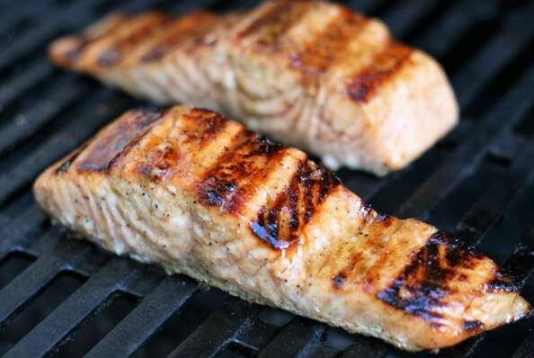

Salmon

Description
- Prep: 5 mins
- Cook: 5 mins
- Additional: 1 hr
- Total: 1 hr 10 mins
- Servings: 6
- Yield: 6 salmon fillets
Per Serving: 177 calories; protein 16.1g; carbohydrates 4.8g; fat 10g; cholesterol 41.8mg; sodium 57mg.
Ingredients
- 2 table spoons dark brown sugar
- 2 tablespoons apple cider vinegar
- 2 tablespoons olive oil
- 1 teaspoon Dijon mustard
- ½ teaspoon coarsely ground black pepper
- 6 (3 ounce) fillets salmon fillets, thawed
Directions
- Combine brown sugar, apple cider vinegar, olive oil, Dijon mustard, and pepper in a bowl for the marinade.
- Place salmon fillets into a shallow glass dish and pour 1/2 of the marinade over the fish. Reserve remaining marinade. Cover and refrigerate for 1 hour.
- Preheat an outdoor grill for medium heat and lightly oil the grate. Discard marinade from the glass dish.
- Grill salmon, brushing with reserved marinade several times, until it flakes easily with a fork, 4 to 6 minutes.
Other Recipes